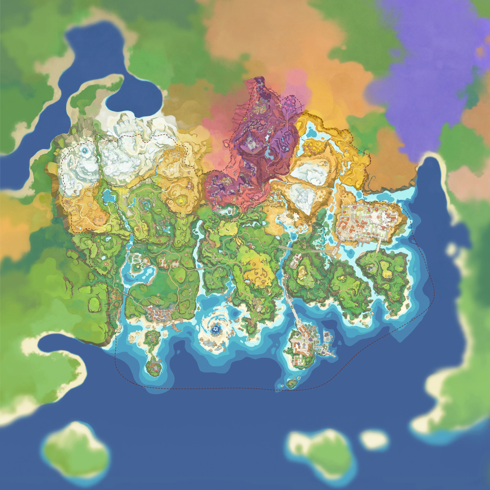

两个问题：①列表信息不全（没有身高 / 体重百分比）；②地图采集悬浮窗里「高100% 重100%」时声音被截断。
本页是 375 / 390 / 平板 与悬浮窗的复刻稿，可点列表行展开；配套文档
docs/方案-附近精灵展示优化-2026-11-25.md。本页是方案稿与布局复刻；Web 端已按批准落地（实现记录见文档 §5），Java 悬浮窗改动待壳发布轮。
2026-11-25 口径：需求功能下线，列表不再出现需求 chip / 「可叫发需求的人来抓」；身高、体重百分比一律显示，不再等大块头 / 小不点牌子；原先重复的「可提醒 +100dB」改为 目标出现！。
按 src/ui/Nearby.tsx 的 NearbyRowItem（129–181 行）逐 class 复刻（需求 UI 已按新口径去掉）。
4 条样例分别覆盖：目标出现 + 双满分、缺身高、普通精灵、已离开视野的异色。
我的 · 游戏数据 · 附近精灵
常驻 4 只 · 仅高价值，离开后保留 10 分钟
我的 · 游戏数据 · 附近精灵
常驻 4 只 · 仅高价值，离开后保留 10 分钟
我的 · 游戏数据 · 附近精灵
常驻 4 只 · 仅高价值，离开后保留 10 分钟
Profile.tsx:122）点任意一行展开 / 收起详情。常显只放扫读需要的 6 项，其余进详情，避免一行堆十几个字段。
我的 · 游戏数据 · 附近精灵
常驻 4 只 · 仅高价值（目标出现 / 炫彩异色污染），离开后保留 10 分钟
我的 · 游戏数据 · 附近精灵
常驻 4 只 · 仅高价值（目标出现 / 炫彩异色污染），离开后保留 10 分钟
我的 · 游戏数据 · 附近精灵
常驻 4 只 · 仅高价值（目标出现 / 炫彩异色污染），离开后保留 10 分钟
我的 · 游戏数据 · 附近精灵
常驻 4 只 · 第 1 条已展开
我的 · 游戏数据 · 附近精灵
方案 B · 全部常显、不做展开
我的 · 游戏数据 · 附近精灵
方案 C · 只在现有 chips 行补「高 / 重」
按安卓壳实测几何复刻：面板 214dp、列表 102dp、行内左右 padding 6dp（可用 90dp）、第二行 7.5sp 单行 + ellipsize=END
（NearbyPanelController.java:844–848）。每张图按 3× 输出，标注里的宽度是浏览器实测（与真机字形宽度约 ±5%）。

pctText 固定一位小数和 %，+100dB 不能再省；
文本比可用宽度多 —，省略号从尾部吃掉声音。
高100 重100 +100dB，约 70dp < 90dp，声音完整.0，其余保留一位小数（98.88 → 98.8，不会把 97.96 显示成 98 而误判达标）。
不改行高、不改面板，只改 metaTextLine2 与 pctText。改动量：小。
| 字段 | 来源（真实字段） | 现状 | 建议显示 | 备注 |
|---|---|---|---|---|
| 物种名 | WildPet.name（wildNearby.ts:123） | 显示 | 主行 · 名称 | — |
| 等级 | raw.level（wildNearby.ts:24） | 显示 | 主行 · Lv37 | — |
| 性别 | ownedPetDetails → gender（wildNearby.ts:128） | 显示 | 主行 · ♂/♀ | 野生实体本身没有，靠抓包里的宠物记录回填；没有就留空 |
| 性格 | ownedPetDetails → nature（wildNearby.ts:127） | 显示 | 次行 · 性格 勇敢 | 同上 |
| 声音（dB） | raw.voiceDb（wildNearby.ts:28） | 显示 | 次行 · +100dB | ±96 以上标达标色 |
| 身高百分比 | heightPct（wildNearby.ts:114，heightPercentOf） | 未显示 | 次行 · 高100% | 本轮要补 |
| 体重百分比 | weightPct（wildNearby.ts:111，weightPercentile） | 未显示 | 次行 · 重100% | 本轮要补 |
| 体型牌 | kinds: big/small（rareRules.ts:60） | 显示 | 标签行 · 大块头 / 小不点 | 体重 + 身高同时 ≥98 / ≤2 才挂牌 |
| 声音牌 | kinds: high/low（rareRules.ts:64） | 被过滤 | 不显示文字（dB 已表达） | 代码有意 filter(kind !== 'high' && kind !== 'low') |
| 炫彩 / 异色 / 污染 | kinds（rareRules.ts:55–57） | 显示 | 标签行 | — |
| 是否稀有 | rare = kinds.length > 0（wildNearby.ts:130） | 间接（加粗） | 详情 · 稀有 是/否 | 不单独占主行 |
| 目标提示 | alertReason（rareRules.ts:82） | 显示（与 +100dB 重复） | 标签行 · 目标出现！ | 不再拼「+100dB」，声音已在指标行 |
| 需求命中 | demandHits（demandMatch.ts） | 显示 | 不展示（功能下线） | 2026-11-25 口径：列表/文案都不再出现；代码里仍在（Nearby.tsx:758-786），落代码时一并清 |
| 距离 / 方位 | radar.points（nearbyRadar.ts） | 显示 | 主行右侧 | — |
| 是否在视野 | RetainedEntry.present（nearbyRetain.ts:18） | 显示「已离开视野」 | 标签行 | — |
| 首次出现 | RetainedEntry.firstSeenAt（nearbyRetain.ts:16） | 未显示 | 详情 · 12:03:11 | 可算「2 分钟前」 |
| 最近看到 | RetainedEntry.lastSeenAt（nearbyRetain.ts:17） | 未显示 | 详情 · 12:04:05 | — |
| 世界坐标 | pos.x / pos.y（wildNearby.ts:32） | 未显示 | 详情 · (1024, -356) | 排障 / 对地图有用 |
| 物种编号 | petId / cfgId（wildNearby.ts:20/22） | 未显示 | 详情 · #3002 | 排障用，可折叠 |
| 原始身高 / 体重 | WildPet.height / weight（wildNearby.ts:25–26） | 未进入展示模型 | 需确认 | inspectCapture.ts:62–67 只搬了百分比，没搬 cm / g；要显示得先补 LiveNearbyPet |
| 是否已收集 | 无此字段 | 未显示 | 需确认 | 只能按物种粗判（有同种另一只就会误报），建议不做 |